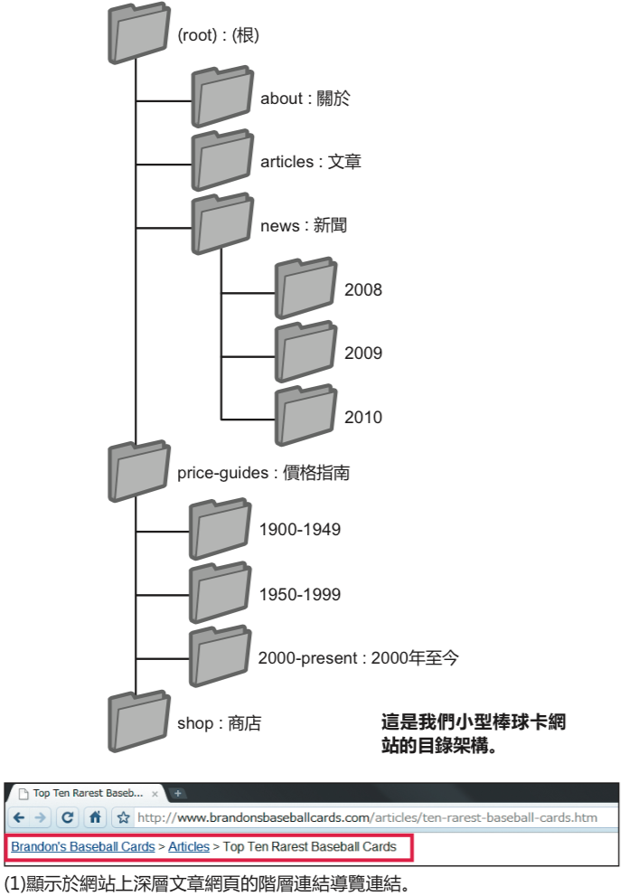
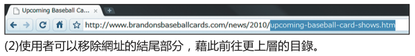
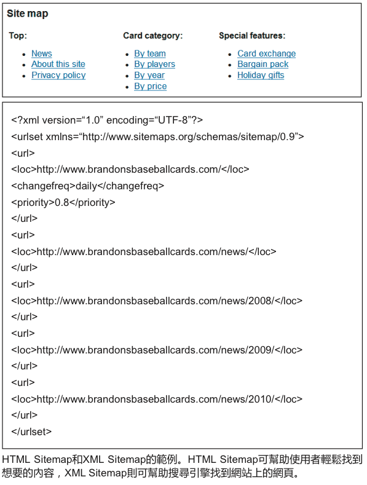

網站導覽
網站導覽說明
網站的導覽功能非常重要
在幫助訪客快速找到其所需內容方面，網站的導覽功能非常重要。此外，對於幫助搜尋引擎瞭解網站管理員認為哪些是重要內容，此功能也同樣重要。雖然 Google 提供的皆是網頁層級的搜尋結果，但 Google 希望也能進一步理解這個網站在整個網站架構中的地位。
以首頁為規劃導覽功能的基準
所有網站都有其首頁或「根」網頁，這種網頁往往是訪客瀏覽最多的，也是訪客瀏覽該網站的起點。除非您的網站只有屈指可數的幾個網頁，否則您應該思考一下如何將訪客從概括性網頁 (根網頁) 導向至包含特定內容的網頁。您是否有大量關於特定主題領域的網頁，因而需要另建網頁來歸納這些相關網頁 (例如:根網頁->列出相關主題->特定主題)？您是否有上百件的商品，需要分類並放置在多個類別和子類別的網頁中?
使用「階層連結清單」導覽來確認使用者的便利性
階層連結導覽是指在網頁頂端或底部放置一排內部連結，讓訪客可以快速回到上一個網頁或根網頁 (1)。大多數的階層連結導覽通常會將最具概括性的網頁 (通常是根網頁) 放在最左邊的第一位，越靠近右邊，列出的網頁所包含的內容就越具體。

名詞解釋
404(「找不到網頁」錯誤)
HTTP狀態碼，這代表伺服器找不到瀏覽器要求的網頁。
XML Sitemap
特定網站的網頁清單。透過建立、傳送這份清單，您便可以向Google通知網站的 所有網頁，包含Google在一般檢索程序時，可能偵測不到的任何網址。
Flash
Adobe Systems Incorporated 所開發的網路技術或軟體，可建立整合音效、影片及動畫的網路內容。
JavaScript
一種程式設計語言，可在網頁中加入動態功能，是許多網路服務普遍使用的語言。
下拉式選單
一種讓使用者從選單中選擇內容的系統，按一下選單時，選擇清單就會以下拉清單的方式顯示。
可用性
內容索引。
使用者體驗
使用者透過使用產品、服務等所獲得的體驗。重點在於提供使用者真正想要的體驗，例如「喜悅」、「便利」及「舒適」。
HTTP狀態碼
電腦之間相互傳輸資訊時，用於表示伺服器回應方式的代碼。代碼由系統指派的三個數字組成，每個數字分別根據其用途而有不同的意義。
網站導覽做法
預先考慮使用者移除您的部分網址會出現的情況
預先考慮使用者移除您的部分網址會出現的情況-您應該預先考慮到，有些使用者可能會以很奇怪的方式瀏覽您的網站。例如使用者可能並不使用網頁上的麵包屑導覽連結，而是去掉一部分網址，以找到更概括性的內容。他們可能正在瀏覽http://www.brandonsbaseballcards.com/news/2010/upcoming-baseball-card-shows.htm，然後卻在瀏覽器的地址列輸入http://www.brandonsbaseballcards.com/news/2010/，認為這樣就可以顯示2010年的所有新聞 (2)。在這種情況下，您的網站是否已準備好顯示使用者想要的內容，還是只顯示一個 404 (「找不到網頁」錯誤)？再者，如果使用者移動至再上一層目錄http://www.brandonsbaseballcards.com/news/的時候，我們又該怎麼做呢？

準備兩種 Sitemap：分別供使用者和搜尋引擎使用
Sitemap (網站架構) 是您網站上的一個簡單網頁，用於顯示網站架構，通常由一份網站網頁的層級清單組成。當訪客在您的網站上找不到某些特定網頁時，即可瀏覽該網頁。雖然搜尋引擎也會瀏覽該網頁，以便對您網站上的網頁進行更全面的檢索，但其主要目的還是為了方便訪客。
您也可以使用 Google 的「網站管理員工具」提交 XMLSitemap，讓 Google 更容易發現您網站上的網頁。使用 Sitemap 檔案還有一個好處，就是您可以使用它來告知 Google 哪個版本的網址是您偏好的標準網址(例如:http://brandonsbaseballcards.com/或http://www.brandonsbaseballcards.com/;請瀏覽更多關於什麼是偏好網域的詳情)。Google 協助建立了開放原始碼的 Sitemap 產生器指令，以幫助您為自己的網站建立 Sitemap 檔案。如要進一步瞭解 Sitemap，請前往「網站管理員說明中心」，瀏覽實用的 Sitemap 檔案指南。

建立自然流暢的層級架構
請儘量建立簡單的架構，讓使用者能從您網站上的主要內容前往他們想要的特定內容。如有必要，可以加入網頁導覽，並將這些網頁有效整合至內部連結架構。
請避免 :
建立複雜的導覽連結網。例如，將網站上所有網頁都連結至其他所有網頁過度細分內容 (使用者必須按20次才能找到位於深層結構下的內容)
導覽中儘量使用文字連結
如果網站網頁大部分都是文字連結，搜尋引擎可以更容易檢索並瞭解您的網站。相較於其他方式，許多使用者更喜歡文字連結，特別是使用的某些裝置無法處理 Flash 或 JavaScript 時。
請避免 :
完全依靠下拉式選單、圖片或動畫來建立導覽雖然大多數搜尋引擎能夠發現網站的這類連結，但如果能讓使用者透過正常文字連結至網站上的所有網頁，將提高網站的可用性，請瀏覽更多關於 Google 如何處理非文字檔案的詳情
在您的網站上放置 HTML Sitemap，並使用 XML Sitemap 檔案
使用一個簡單的 Sitemap，收錄您網站上所有網頁或最重要網頁 (如果您有成百上千個網頁)，是非常實用的作法。為您的網站建立 XML Sitemap 檔案，將確保搜尋引擎能夠找到您網站上的網頁。
請避免 :
HTMLSitemap中含有無效連結，無法到達相應的網頁
建立的 HTML Sitemap 僅列出網頁，而沒有進行整理
建立實用的 404 網頁
使用者有時會因開啟無效連結或輸入錯誤的網址，而連至您網站中並不存在的網頁。使用自訂 404 網頁能夠確實幫助使用者返回您網站上的有效網頁，大幅改善使用者體驗。您的 404 網頁最好能提供返回您網站根網頁的連結，以及前往網站中熱門或相關內容的連結。Google為您提供了 404 小工具，您可以將其嵌入您的 404 網頁，即可自動產生許多實用的功能。您也可以使用「Google網站管理員工具」，找出導致「找不到網頁」錯誤的網址來源。
請避免 :
讓搜尋引擎建立404網頁的索引 (請務必將網站伺服器設定為當使用者要求的網頁不存在時，能傳回 404 HTTP 狀態碼)
只提供「找不到網頁」、「404」等模糊的訊息，或者甚至連 404 網頁都沒有
404 網頁的設計與您網站的其他網頁不一致
參考資料
- Google 搜尋引擎最佳化 初學者指南
- 網站管理員工具
- Bing - 網站管理員工具
- Sitemap產生器指令碼
- 什麼是偏好網域
- Sitemap檔案指南
- Google如何處理非文字檔案
- 404 HTTP狀態碼
- 自訂404網頁
- 404小工具
- 導致「找不到網頁」錯誤的網址來源
- [教學]利用Bing網站管理員工具提交Sitemap (Yahoo也適用) – 香腸炒魷魚
附註：目前 Yahoo 與 Bing 都使用 Bing 網站管理工具登錄 sitemap 即可
中國搜尋引擎 sitemap 登入